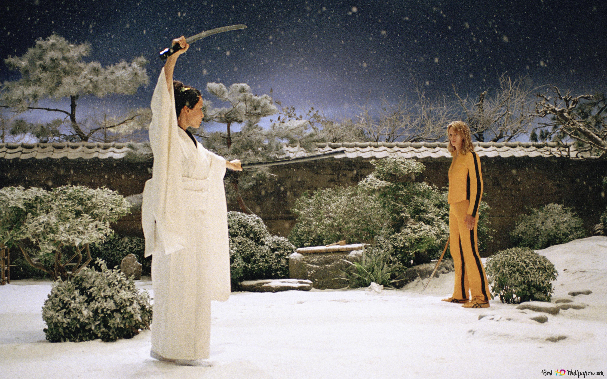
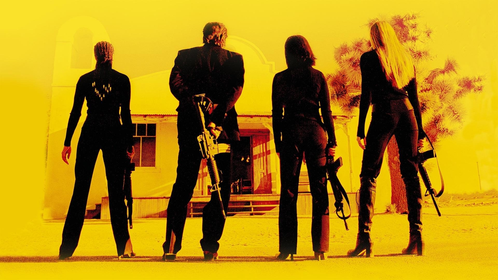

KILL BILL (2 PELICULAS)
Obra cinematográfica de acción y artes marciales escrita y dirigida por Quentin Tarantino
Sinopsis de la Obra
La saga Kill Bill (conformada por Volumen 1, estrenada en 2003, y Volumen 2, estrenada en 2004) es una epopeya cinematográfica de acción, artes marciales y suspenso escrita y dirigida por Quentin Tarantino. Originalmente concebida como una única película de más de cuatro horas, la obra narra la historia de Beatrix Kiddo (interpretada por Uma Thurman), una exasesina profesional conocida bajo el nombre clave de "Mamba Negra" o simplemente "La Novia". Tras intentar abandonar su vida criminal para casarse y formar una familia, es brutalmente atacada el día de su ensayo de boda por sus antiguos compañeros del Escuadrón Asesino Víbora Letal, liderados por su expareja y mentor, Bill. Después de sobrevivir milagrosamente a un disparo en la cabeza y permanecer cuatro años en estado de coma, Beatrix despierta con el único objetivo de ejecutar una metódica y implacable venganza contra cada uno de los responsables de la masacre y del aparente asesinato de su hija no nata.
Razones por las que es considerada una buena peli
- Maestría en el cine posmoderno y el pastiche: Tarantino construye la película como un mosaico de referencias, fusionando géneros aparentemente dispares como el cine de samuráis (chambara), el kung-fu clásico de Hong Kong, el spaghetti western, el cine de explotación (grindhouse) y la animación japonesa (anime). Lejos de ser una simple copia, la obra reinterpreta estos estilos con una identidad visual y narrativa propia.
- Narrativa no lineal y estructura capitular: Al igual que en otras obras del director, la trama se divide en capítulos desordenados cronológicamente. Este recurso mantiene la tensión dramática, dosifica la información sobre el pasado de los personajes y transforma el tono de la película: mientras el Volumen 1 privilegia la acción frenética y estilizada, el Volumen 2 apuesta por el desarrollo psicológico, los diálogos extensos y el drama íntimo.
- Estilización de la violencia: La violencia en Kill Bill abandona el realismo crudo para convertirse en una coreografía estética y teatral, influenciada por la tradición oriental. El uso exagerado de sangre artificial, los cambios repentinos a blanco y negro y el diseño sonoro convierten las secuencias de combate en piezas artísticas memorables.
- Iconografía y banda sonora: Desde el icónico traje amarillo de la protagonista (en homenaje a Bruce Lee) hasta la katana forjada por Hattori Hanzō, la película generó símbolos instantáneos de la cultura pop. Asimismo, su banda sonora ecléctica —que mezcla temas de Ennio Morricone, música surf, flauta de pan y canciones pop— funciona como un elemento narrativo fundamental.
Importancia en la historia del cine
- Reivindicación de heroínas de acción complejas: Beatrix Kiddo se consolidó como uno de los personajes femeninos más influyentes del cine contemporáneo. La película equilibra su letalidad física con su vulnerabilidad emocional y su instinto maternal, alejándose de los estereotipos tradicionales de las películas de acción de Hollywood.
- Rescate y divulgación del cine de género: Para los amantes del cine (cinéfilos), Kill Bill funciona como una puerta de entrada a la historia del cine mundial. Gracias a la popularidad de la saga, nuevas generaciones de espectadores descubrieron obras clásicas del cine asiático, películas de serie B y directores de culto como Kinji Fukasaku, Sergio Leone y Shaw Brothers.
- Impacto en el cine de acción moderno: La exigente preparación física de los actores, el rechazo al uso excesivo de efectos generados por computadora (CGI) en favor de acrobacias reales y el cuidado en las coreografías marcaron un estándar de calidad que influyó directamente en franquicias posteriores de acción y artes marciales, como John Wick o Atómica.

